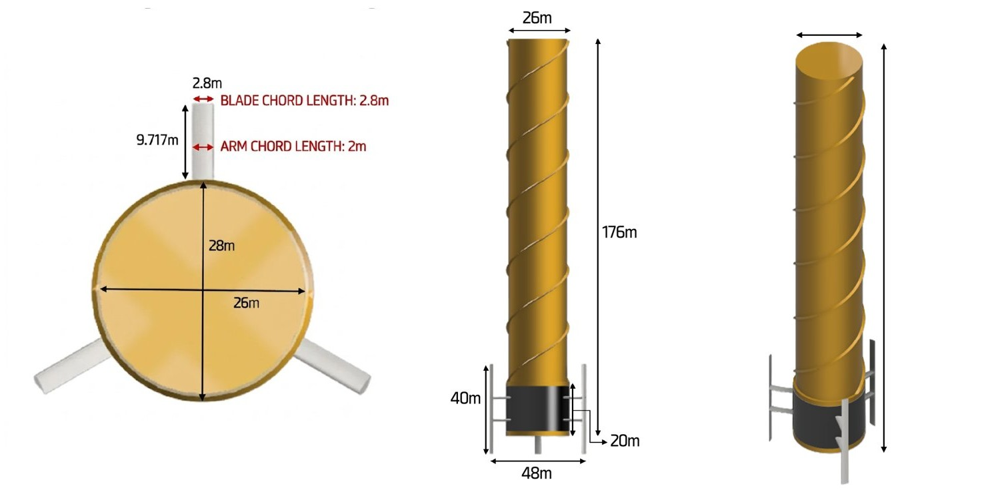

Rim-driven Tidal Current Generator on a SPAR PlatformPresident's Award
- Context
- 2026 Ocean Engineering CAE Competition (national), Oct 2026; President's Award of The Korean Society of Ocean Engineers (Team BluePower, 4 members)
- Role
- Team leader; performed the hydrodynamic performance and structural analysis
A deepwater SPAR producing 60,000 barrels a day needs an estimated 11.6 MW, and its hull is full of risers and production equipment, so a shaft-driven turbine has nowhere to go. We put a shaftless rim generator on the outside of the hull instead: three H-Darrieus blades on a ring that turns around a Tubular Bells–size classic spar (176 m long, D = 26 m), sited in deep water off eastern Trinidad.

TopFrontPerspective
- Blade section. Ran QBlade double-multiple-streamtube sweeps with multi-Reynolds polars over four NACA sections, solidity 0.10–0.50 and TSR 0–8. Chose NACA 0018 (Cp 0.539): 1.8% below the best section but 50% thicker, which the structure needed.
- Extreme load. At the 100-year current (2.37 m/s) the worst case was TSR 7.25, giving 179 kN/m normal load on the blade. A GFRP shell needs at least 41.6 mm under the DNV-OS-C501 composite safety factor.
- Support arms. Set up a minimum-mass optimization of the S690 tube under stress, neutral-buoyancy, fit-inside-fairing and flow-separation constraints: D = 778.5 mm, t = 58 mm, 444 MPa against 500 MPa allowable.
- Neutral buoyancy. Sized the blades (26.2 t) and faired arms to weigh exactly their displacement, so the rotor adds no deadweight to a platform whose payload is its limiting resource.
Net output is 1.09 MW, about 9.4% of the platform's estimated 11.6 MW demand. This is a concept design (TRL 2–3): blade–platform coupled motion, CFD and FEA were left for the next stage.